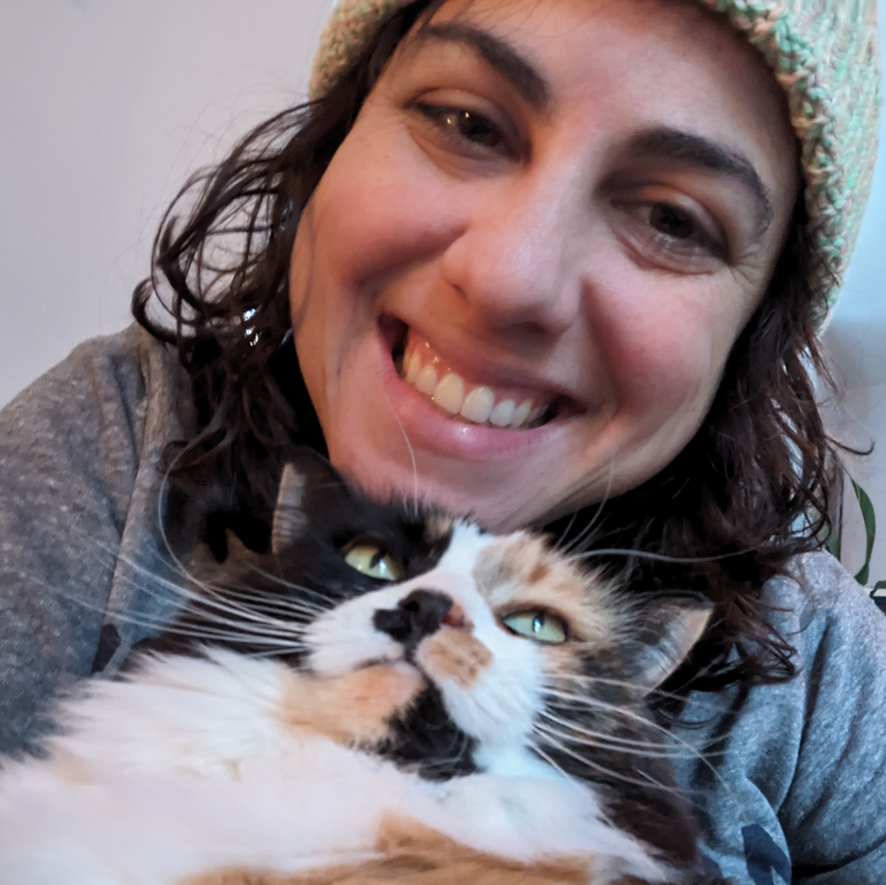

<br>
<p style="font-size: 14;">
I am a final year PhD student in Computer Science. My research is focused on designing low-cost sensor networks to monitor air quality, temperature, and noise in cities. Before beginning grad school, I taught CS at the middle and high school level, where I also designed a makerspace complete with a laser cutter and CNC machine. Outside of research, I love cooking, making pottery, playing video games, and cuddling with my cat, Peaches.
</p>